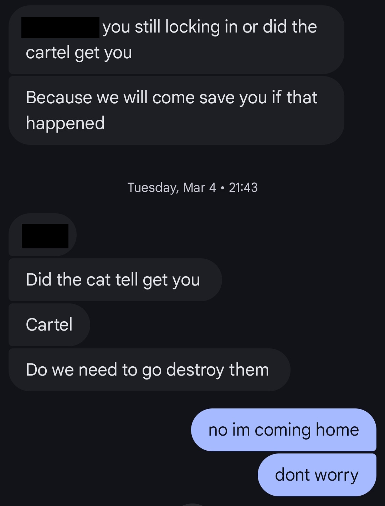
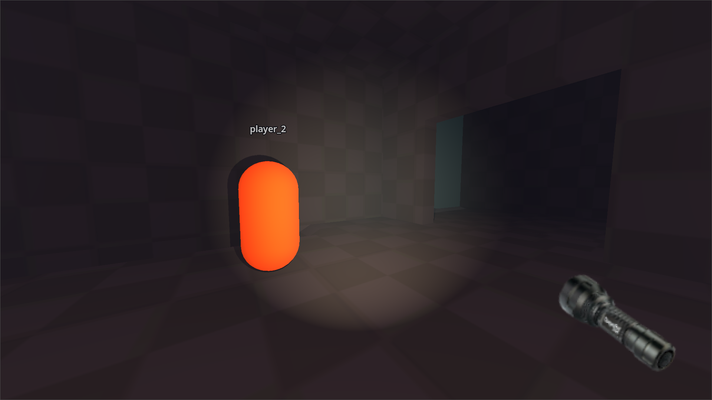

state of the trash 2025

i'm alive!!!
and more importantly, so is the dream. the past year has been probably the craziest of my life while simultaneously being the most productive i've ever been. needless to say, i'm moved past my dooming phase. let's get into it.
"how's college life treatin' ya?"
alrighty, so i don't want to get too deep into my personal life, but if you remember from last time, i had just moved away from college. and being so real, i was... pretty terrified. of moving away, of the culture, but most of all i was worried i was just going to have zero friends (˶˃⤙˂˶). i often feel like i just kinda luck my way into friendships (still do), and if that's really the case, then i need to start praying or something because i am lucky as could be. i have made soooooo many great connections, it feels crazy to me when i realize "wait i literally did not know any of these people a year ago." genuinely could not ask for better friends. if any of you are reading this, i luv u :3 (and if u are one of my home town friends, i luv u toooo).
another thing: college is a lot harder than highschool, and it's taken up a lot more of my time. my calculus classes in particular have been the bane of my existance, i have always struggled a quite a bit with math...
buuuuut, with all that partying and homework, there was a real risk of my passion projects falling to the wayside. i am very happy to report that i did not let that happen, and in fact i have been doing probably the best i have been since 2021-22, when i had baby highschool freshmen homework (mostly online). i have often worked hours that i thought would be straight up impossible for me at the end of 2023. my secret weapon? the library. seriously, i would kill for a place like this that's open late (as in, past sunset) in my hometown, but there just isn't anywhere that's equivalent. but yeah, i be clocking in at the library like i'm crunching 60 hour work weeks, only, it's all self inflicted 😭
i hate calculus
my first semester was very easy because i foolishly let me counciler talk me into taking fewer classes than i needed, but since then i would say my college schedules have been harder than highschool on average for sure. what doesn't help is that i've decided to persue a minor (i'll get to that), which according to my plan should be just barely possible to get while still graduating in 3.5 years, provided i take summer classes (oh yeah i'm also trying to graduate in 3.5 years....). but i've held myself to a rule that has stuck well: i always work on my stuff for the last 2 hours before i go home, no matter what. i've taking some pretty grueling classes that have demanded a lot of me, but they have also served to remind me that my work is the fun work, and that's kept me going.
by the numbers
lines of code*
pages of art*
mins of music
words*
mins of video
lines of html/css/js
i was pretty suprised by these numbers when i calculated them out. my code output went way up, but i was a little bummed to realize that it's still not only 2K lines, which honestly isn't that much (some people can literally do that in a day). i think not including homework is the reason for this disconnect. i also honestly felt like i drew way more than i actually did, although i did probably spend much more time drawing this year compared to last (i even finished a lesson of Drawabox!). but what really surprised me was the sheer amount of work i did on this website... i thought last year was going to be an unusually high exception, but in the wake of making the site redesign, this year was even higher!! videos and writing went down a lot, which i'm a little sad about, but it's far from my main priority so it's okay.
back in business
last year i was really sad because it had been a very, very long time since i had actually made a game. this year, i made 4! granted, two of them were with a team (which is was a cool experience!) and not publicly released, and one was tiny made in just 3 hours... but still, i'm really happy with that! the first game i made was drillmonger, a bite-sized and rapid paced arcadey action game. i made it in 2 weeks during december for a (lesser known) game jam at my university... despite some pretty heavy procrastination on my part, i was somehow the only one who had a fully functional game ૮ ․ ․ ྀིა
the second game i made was for the universities REAL game jam that all the students in the game design major actually go to. one problem is that the ciriculum teaches unity, and i hadn't used unity since highschool where i was forced to use it for a game development class... so my capabilities were nerfed for sure. i was worried about either being really awkward (naturally) or being the weak link, but i managed to avoid both of those. there was a programmer who was pretty good and helped me out a lot.
fun fact: i have never beaten this game. the platforming is so buns 😭
the second game, made for the same jam, was a lot better. i honestly felt like i contributed way less, but the game came out better..... we had a team that was much bigger, and honestly getting everyone organized was a struggle, but we had someone one our team who kinda unofficially stepped up and took charge, which helped us out a lot. here's what it looked like:
reminds me of VVVVVV. i wish i coulda helped more...
finally, i did quite a bit of work on a secret project implementing something very saucy: online multiplayer!! i have actually had this project on the backburner for around 2 years now... there's still a lot of work to be done and i'm not sure if i'll release it, but what's here is very cool!!
even getting this half working was soooo hard...
overall, i'm really happy to be able to say that i'm actually making games again.
another long time struggle for me has been drawing, and while i'm still very much an ameatur, i think i can say that i have definitely improved even if it doesn't always feel like it in the moment. at the very least, i'm certainly putting effort in. for one, i finally completed Drawabox lesson 1 a while back. if I were to guess, i think i actually might be one of the slowest students to ever take the course lol... but it's not a race. the other big step though is that, as of last semester, i have begun to persue a minor in animation at my college. this wasn't originally part of my plan but being so real, i just couldn't stand seeing people all around me in the major while i was stuck in computer science ᴗ͈ . ᴗ͈ honestly, it's been extremely hard for me, i can't lie. it's pretty clear that most people in the major are like, actual artists who have been drawing since highschool or earlier, so i definitely feel very out of my depth at times. but ultimately, i think that's a good thing. class assignments have pushed me to draw things i would otherwise never even attempt, which has been really good for me... although it has certainly kept me busy. my Drawabox progress is pretty much on hold during the main school year, and i think i'll probably relegate it to a summer only thing until i graduate.
and finally, i'm pretty happy with the near-complete overhaul i did to this website. while making it moment to moment didn't feel that hard, looking at it all at once, the difference is just night and day.

what this site looked like 1 year ago
the overhaul pushed my Graph Design™ skills quite a bit... there's many pages i'm quite happy with! not too much to say since i think this site speaks for itself, but i think it's pretty cool.
future trash
while i would say this has been a pretty great year for me, there are some things i still want to work on for this upcoming year.
first: i want to actually, for real, no whats no buts make some progress on making games in a custom engine. now to be fair to myself, i actually have made more progress than it might seem as i have at least learned the basics of C++ from my computer science courses... there's still lots to learn, but i can say i actually understand how pointers and classes work!! so i've made some progress. but i haven't actually made any games (only skeletons...) so i've decided i'm going to take a different approach. i'm going to start by making an ultra simple clone of a game (i'm thinking pong). then i will try making an simple 1 room platformer. then maybe a top down RPGMaker type game with no combat to learn tilemaps. THEN a game with just RPG combat... then a full fledged (very short) RPG... or something like that. basically i just want to start as small as possible to make things easier for myself so i can get the ball rolling.
and i will actually do it this time!!
next on the chopping block, i will tentatively (once again) put "start learning music production." don't get me wrong, just learning art and programming is quite a lot, so i suspect i won't be making a ton of progress on this until probably after i graduate. but i do think it would be good to just start dipping my toes in sooner rather than later... so i will try to find some time to mess around a little bit!
next... there's a certain project that i have been neglecting for over a year now, and that's blood red harmony. it's honestly just comical how slow i work on things sometimes, but i think i will just write like one chapter a year or something lol. look forward to that...
and last up, my eternal project: this website. i think this year, for real, i don't think i will be working nearly as much on it. but as always there are still a few things i want to work on. i made some attempts at mobile compatiability but many of the pages still look like buns (notably the home page, which is probably the worst page to have that problem lol). i also want to refactor the projects in progress section on the homepage to be bigger and look nicer. and last, i want to maybe slightly remake the links page... perhaps with some kind of easy data format, with the HTML autogenerated so that it's easier to add stuff to it? i also just want more rebust organization, which many different tabs similar to how the gallery page functions. i'll work on it.
how cooked am i?
someone once asked me, without a hint of sarcasm, "how likely do you think it is that you become a millionare?" my answer: 0%.if i ever actually become a millionare, make sure no one has killed and replaced me i say that for (i believe) good reason. here's my current evaluation of the fields i'm interested in.
- game development
- AAA has been imploding since 2022
- going indie has massive competition, requring extreme skill and luck to succeed
- although, working in indie might not be a bad idea
- slightly threatened by AI
- software engineering
- ultra threated by AI. entry level positions will probably be mostly dead by the time i graduate, but very experienced and specialized jobs will be ok
- high competitition. the "everyone should code" mentality of the 2010s brought many people into computer science thinking it's a safe bet when it's really not (my opinion: it's really more a hobby degree. legal, medical, and trades are the only "safe bets" left)
- general culture genuinely disgusts me. there are some cool people of course but i could not fathom working in big tech
- artist / animator
- requires insane skill that i am probably at least a decade off from developing
- has also been imploding on a similar trajectory to game development
- moderately threatened by AI
when laid out like that, this all sounds like a terrible idea, and i think it kind of is... but there's just one small problem. i actually kind of like making games, and i'm old enough that i don't think i'm ever going to grow out of it at this point.
of those three, the best choice right now seems software engineering, but i will probably dip into all 3 because the job market is really tough right now, so i need all the chances i can get. but that kinda begs the question of what field specifically i want to go for... i am currently thinking either graphics programming or maybe "simple" (raw HTML/CSS/JS) frontend (if that's even employable??). i like these two, they help me towards my main dream of just making good games, and are somewhat niche which is actually a good thing because they are less likely to be automated away. i'm really going to need some more time to deliberate and try things out, but this is where i'm at right now.
i'm in an interesting position because i have a ton of "hobby experience," but basically zero "work experience." i have often heard recommendations that to make a personal project in a weekend or over a month or two, which is a joke compared to the scale of some of the things i have done. that makes it sound like i'm ahead of the game, but at the same time i feel like i know nothing. probably could never pass a coding interview right now because i don't know anything about CS fundamentals (working on it) or the hottest JS framework. all i have are projects, and i worry about how meaningful they will actually be to employeers. hopefully i don't look as bad as i think i do.
start making me do manual labor or something, then i might change my tune lol
well, screw them. i am very obviously not making games for employeers... i am making them for me. i didn't choose this path to make $200K/year doing some BS webdev busywork, i just want to make a living in something that will help train my skills for game development. i hope things can work out and i will try my absolute hardest, but even if they don't that's not gonna stop me.
and honestly, at this point?
nothing will.
NonGMOTrash
september 16th, 2025